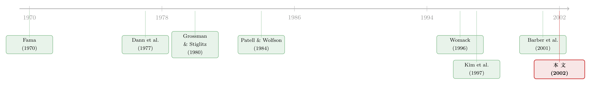

价格反应，从「分钟」缩短到「秒」——当分析师的话被搬上电视直播
本文读的是 Busse & Green (2002, Journal of Financial Economics)：当 CNBC 的 Morning Call、Midday Call 在盘中口播分析师对个股的看法时，股价在被提到的几秒钟内就开始反应，正面消息一分钟内就被价格基本吸收完毕；而且，能在初次提及后 15 秒内下单的交易者，确实能在 Midday Call 的正面报道里赚到一点小而显著的钱。这把丈量「市场有多快」的尺子，从分钟一路压到了秒。
1 引言：一个被反复改写的「很快」
市场有效性 (market efficiency) 这个词，自 Fama (1970) 给出经典定义——证券价格「充分反映所有可得信息」——以来，几乎成了金融学的一句口头禅。但在实践中，价格从来不是瞬间反应的。于是一代代研究者退而求其次，用一个更可操作的问题来逼近它：价格到底要花多久，才能把一条新消息消化掉？
早期的答案，今天看来慢得有些可爱。Patell and Wolfson (1984) 研究盈余和股利公告，Jennings and Starks (1985)、Barclay and Litzenberger (1988) 研究公司公告，Dann et al. (1977) 研究大宗交易的冲击——这些研究普遍发现，价格大约在 5 到 15 分钟内把消息吸收完，而作者们当时已经把这称作「非常快 (very quick)」了。
可问题在于，市场本身一直在变。信息越来越唾手可得，交易成本大幅下降，技术让市场运转的节奏越来越快。一只流动性好的股票，五分钟里能成交几百次。于是一个自然的问题冒了出来：到了 2000 年，价格还需要五分钟吗？短暂的套利窗口，又能存在多久？
要回答这个问题，你需要两样东西同时齐备：一条精确到秒的信息发布时点，以及同样精确的逐笔成交与报价。Busse and Green 找到了一个绝妙的实验场——电视。
2 实验场：当分析师的话被「直播」出来
故事的核心道具，是财经电视台 CNBC 的两档节目：Morning Call（通常在美东时间上午 11:05–11:10 播出，主持人 Consuelo Mack）和 Midday Call（下午 2:53–2:58 播出，主持人 Maria Bartiromo）。每段节目不到两分钟，主持人在里面口播一位或多位分析师对个股的看法。
这个数据为什么独特？因为这两档节目是在股市开盘时直播的。这意味着研究者可以做一件以往做不到的事：精确地记下「某只股票第一次被提到」的那一秒，然后把这一秒当成事件时间里的时刻零点 (time zero)，再去看价格此后一秒一秒地怎么动。
怎么把电视画面对齐到「秒」？作者的办法很笨但很有效：录 CNBC 的同时，穿插录下持续显示时间的 TV Guide 频道，再用 www.time.gov 的原子钟去校准 TV Guide 时钟本身的误差，最后靠录像机计数器倒推。反复试录之后，他们有把握把播出时点的误差控制在几秒之内。
接着，一个自然的问题是：这些消息「重不重要」？作者人工判定每条报道的情绪是正面还是负面（剔除 22 条情绪含混的），并从 Bloomberg 取得交易所挂牌、市值、行业代码等信息。最终样本是 2000 年 6 月 12 日到 10 月 27 日、横跨 84 个交易日的 322 条个股报道。
这里有两个必须先说清楚的样本特征。其一，正面报道远多于负面：Morning Call 里 155 正、19 负，Midday Call 里 125 正、23 负——这跟分析师推荐一贯偏乐观一致，但也意味着检验负面消息的统计功效偏弱。其二，报道的几乎都是大公司：超过 80% 的报道集中在 NYSE 市值最高的两个十分位。由于大公司更流动，作者诚实地提醒：他们测出的反应速度，是一个上界 (upper bound)——真实世界里小股票只会更慢。
价格与成交数据来自 TAQ (Trade and Quote) 数据库。报价上，作者沿用 Chordia et al. (2001) 的做法，滤掉次级市场的被动自动报价 (autoquotes)，只用主市场报价。统计推断上，因为日内收益不服从正态分布，他们用 Barclay and Litzenberger (1988) 的非参数自助法 (nonparametric bootstrap) 来算 p 值。
3 核心发现：一分钟，与一次小小的「反应过度」
现在到了真正关键的一步。把所有正面的 Midday Call 报道对齐到时刻零点，会看到什么？
价格在几秒内启动，一分钟内基本走完。 从事件前 15 分钟到事件后 1 分钟，累计收益是 62 个基点，而其中 41 个基点发生在事件后的第一分钟里。被正面提及的公司中，有 73% 在这一分钟里录得正收益，平均市值增加约 $109 million。
这个速度，跟过去的文献相比是数量级的差别。Kim et al. (1997) 研究开盘前发布的买入推荐，发现价格要在开盘后 5 到 15 分钟才反映出来；而这里，正面消息一分钟内就被吸收了。技术把我们对「很快」的感知一路压缩，而这篇论文证明：价格把消息消化掉所需要的时间，也跟着缩短了。
但故事没有停在「快」上。接着出现了一个反转。 这一分钟的上冲之后，紧跟着是一次小幅回落：事件后 1 到 4 分钟的平均收益是 −12 个基点，在 5% 水平上显著。换句话说，最初那一下反应里，藏着一点过度反应 (overreaction) 的影子，随后被市场自己纠正回来。这种「先冲后回」的模式，其实在更低频的研究里早有记录——Stickel (1985) 发现 Value Line 评级变动后正收益持续两天、第三天反转；Barber and Loeffler (1993)、Liang (1999) 在《华尔街日报》「飞镖专栏」的选股里也看到类似回落。区别只在于，这里的「两天」被压缩成了「两分钟」。
一个有意思的旁证：正面 Midday 报道之前的五分钟，价格已经显著上行了。这说明有一部分市场参与者，在节目播出前就知道了消息——把看法透露给 Midday Call 主持人的分析师，多半也会把同样的看法告诉自己的客户，而客户可以抢先交易。（关于「消息在正式发布前就被人用了一次」这条暗线，可参见《报告还没发，他们已经先买了五天》。）
那负面消息呢？负面的反应更大，但更慢。 Morning、Midday 负面报道后一分钟的价格变化分别是 −29 和 −23 个基点，而 15 分钟的累计收益则达到 −93 和 −75 个基点。正面一分钟搞定，负面却要拖足 15 分钟——这种不对称，作者归因于卖空成本更高：坏消息要被价格充分反映，得有人愿意（且能够）做空，而做空更贵、更难。这跟 Womack (1996) 在日度层面的发现遥相呼应——他发现正面推荐后的异常收益持续约一个月，而负面推荐后的负异常收益能持续半年。
还有一个对照很说明问题。Juergens (2000) 研究通过 First Call（一个面向专业投资者的实时订阅服务）发布的升降级，发现升级带来约 0.79% 的涨、降级带来约 0.83% 的跌，与本文 Midday Call 的半小时反应量级相当；而 Kim et al. (1997) 研究通过 Dow Jones 新闻线发布的同类消息，却发现几乎没有价格反应。两相对照，作者给出一个耐人寻味的判断：市场把 Midday Call 里的分析师观点，当成了类似半私密信息服务 (semi-private information) 的东西来对待，而不是像新闻线那样早已人尽皆知的冗余信息。
4 谁在交易：从「价格反应」到「真金白银」
价格动了，是因为有人在交易。这是这篇论文从「市场有效性」走向「谁让它有效」的第二步。
成交强度在第一分钟翻倍有余。 而且方向和情绪对得上：正面报道后买方发起 (buyer-initiated) 的成交显著增加，负面报道后卖方发起 (seller-initiated) 的成交显著增加。作者用类似 Hvidkjaer (2000) 的方法刻画订单方向的失衡，定义如下的订单失衡 (order imbalance) 指标：
当 IMBAL = 1 时所有成交都是买方发起，IMBAL = −1 时全是卖方发起。买卖方向的判定，作者跟随 Ellis et al. (2000) 和 Bessembinder (2002) 把成交价与「当时」的报价比较（不加滞后），价差之内则用 tick rule；他们也验证过，换成经典的 Lee and Ready (1991) 算法结果几乎一样。两样本之间的差异，用单尾的 Kolmogorov–Smirnov 检验来判定。
但真正关键的一步，是把「有人在交易」推进到「交易能不能赚钱」。作者构造了一个极端的短线策略：在股票被初次提及后的 15 秒内就执行。结果是：在 Midday Call 的正面报道里，扣除交易成本之后，这些超短线交易者能赚到小而显著的利润。
这个结论之所以重要，是因为它和 Barber et al. (2001) 的著名发现唱了反调。后者发现，基于一致分析师推荐的交易策略，其异常收益会被交易成本全部吃掉。差别在哪？Barber et al. 的策略在推荐当天的收盘价成交，而本文的策略在消息出现后的几秒钟内成交。于是反转出现了：当我们把交易窗口从「当天收盘」缩到「十几秒」，那点利润就还没来得及被市场抹平。
作者由此点出全文真正的落脚点：这些只对极短视野交易者开放的小利润，恰恰是 Grossman and Stiglitz (1980) 意义上、对持续监控信息源的补偿。市场之所以能在几秒内反应，不是因为价格神奇地自动调整，而是因为有那么一群人，时时刻刻盯着屏幕、随时准备扣下扳机——他们赚走的那点钱，正是市场效率的「润滑费」。（关于这种「有人搭便车、价格却不变笨」的张力，可参见《搭便车的人越来越多，价格却没有变笨》。）
5 文献脉络
把这篇论文放回它生长的那条线上，叙事会更清楚。
源头是 Fama (1970) 立下的市场有效性定义。但由于价格从不瞬间反应，一整支「测速」的文献随之兴起：Dann et al. (1977) 测大宗交易，Patell and Wolfson (1984)、Jennings and Starks (1985)、Barclay and Litzenberger (1988) 测公司公告，结论都落在「5 到 15 分钟」这个量级，并称之为「很快」。与此并行的，是研究分析师推荐价值的另一支：Lloyd Davies and Canes (1978) 发现推荐发布会影响价格两天，Womack (1996) 把视野拉长到数月，Kim et al. (1997) 则把分辨率提到「开盘后 5–15 分钟」。

Busse and Green (2002) 站在这两支的交汇处：它用电视直播这一精确到秒的信息发布，把「测速」的分辨率从分钟推到秒，又用「15 秒内交易」的利润，正面回应了 Barber et al. (2001) 关于「交易成本吃光收益」的争论，并最终用 Grossman and Stiglitz (1980) 的逻辑给出解释。后来的研究把这套「按秒对齐口播信息与价格」的思路继续推进——比如把美联储主席发言逐字对齐到价格上（可参见《主席开口的那一分钟》），以及给市场效率本身装上一只更精细的「秒表」（可参见《市场要多久才「想明白」？》）。
评论与延伸（Q&A + 研究方向）
(a) 几个可能的疑问
Q：电视口播的分析师观点，算「新信息」还是「二手信息」？
严格说是二手——分析师的原始观点先到了客户那里。但本文的妙处恰恰在于区分了两档节目：Midday Call 有显著反应、还有事前的价格上行，说明它对部分人是「半私密」的新信息；而 Morning Call 正面报道一分钟仅 6.8 个基点、半小时累计收益甚至为负，更像是「不太相关或不再新鲜」的旧闻。同样是电视口播，市场的定价是有区分的。
Q：一分钟 41 个基点的反应，会不会只是大盘在动、被错算成了个股反应？
作者检验过：用原始收益和用异常收益（行业×市值匹配组合、或 CRSP 市场模型残差）算出来的结果「没有实质差别」。在一分钟这种尺度上，大盘漂移本就微乎其微，主要噪声来自买卖价差的跳动，而非系统性收益。
Q：那个 −12 个基点的回落，凭什么就叫「过度反应」而不是统计噪声？
它在 5% 水平上显著，且方向与初始上冲相反、紧随其后——这正是「先冲后回」的过度反应特征，并与 Stickel (1985)、Liang (1999) 等日度证据同构。当然样本不大，作者自己也强调精确的「调整何时结束」难以钉死。
Q：既然正面消息一分钟就反映完，为什么负面要拖 15 分钟？
作者的解释是卖空成本与约束：好消息谁都能买，坏消息却要有人能借到券、付得起做空的代价才能压价。这与 Womack (1996) 「负面推荐的负收益持续半年」的低频不对称一脉相承。不过负面样本仅 19+23 条，功效偏弱，这个量级要谨慎看待。
Q：15 秒内能赚钱，是不是说市场「无效」？
不必这么读。利润「小而显著」，且只对能在 15 秒内成交、持续盯盘的人开放——这正是 Grossman-Stiglitz 框架里对信息获取成本的均衡补偿。市场近乎有效，但留了一条窄缝给监控成本最低的那批人，否则没人愿意去让价格变有效。
Q：样本几乎全是大盘股，结论能外推吗？
不能直接外推到小盘。作者明说这是反应速度的上界：大公司更流动、做市更深，所以反应最快。小盘、低流动股票只会更慢，套利窗口也更宽。
(b) 几个可能的研究问题与提案
1. 把这套「按秒对齐口播信息」搬到公司债市场。 【经济故事】债券市场以场外、做市商报价为主，信息扩散远比股票慢。同一条分析师/评级消息，债与股的反应速度差，本身就是流动性与市场结构的直接度量。 【可行性】中。需要 TRACE 逐笔成交对齐到精确的消息时点，但 TRACE 时间戳精度与盘中报价覆盖是真实约束；可先聚焦评级机构盘中行动这类有明确时点的事件。
2. 外资持有人比例与「实时反应速度」的横截面关系。 【经济故事】如果某类投资者（如时区错位的外资）无法实时盯盘，那么外资占比高的股票，对盘中口播信息的反应是否更慢、回落是否更大？这能把「谁让价格有效」落到持有人结构上。 【可行性】中。需要个股层面的外资持股数据加上日内成交，识别上要处理外资偏好大盘、流动性更好的内生性，可用可投资度变动做准自然实验。
3. 媒体「主播声誉」对价格冲击的因果效应。 【经济故事】本文已注意到 Bartiromo（ABI/Inform 65 篇报道）远比 Mack（6 篇）有名，并猜测声誉反映了获取消息的能力。沿 Stickel (1992, 1995) 的分析师声誉思路，可问：是主播声誉本身在定价，还是消息质量？ 【可行性】中偏低。主播更替少、样本有限，难以干净识别；可借主播跳槽/换岗这类事件做事件研究，但功效堪忧。
4. 当代算法交易环境下，「15 秒利润」还在不在？ 【经济故事】本文是 2000 年的数据。二十多年后，HFT 把反应压到毫秒，那条留给「持续监控者」的窄缝是被算法填平了，还是只是搬到了更短的时间尺度上？ 【可行性】高。同类电视/社媒口播事件可重新采集，配合当代毫秒级 TAQ，直接对照检验反应速度与短线利润的演化。
我的判断
这篇论文的贡献，在于它用一个几乎完美的自然时点——盘中电视直播——把市场有效性的测量分辨率，从「分钟」推进到「秒」，并第一次让我们看清价格在最初一分钟里「冲—回」的微观结构。更重要的是，它没有止步于「快」，而是用「15 秒内交易仍有小利」把效率与 Grossman-Stiglitz 的信息成本逻辑接上了，正面回应了 Barber et al. (2001)，这一点在文献上很漂亮。
对识别，我有两点担忧。其一是事前价格上行：正面 Midday 报道前五分钟价格已显著上行，说明信息存在泄露，那么「时刻零点」未必是信息真正进入市场的起点，测出的「一分钟」可能低估了完整的反应时长。其二是样本与功效：322 条报道、负面消息仅 40 余条、且高度集中于大盘股，使得负面反应速度与「调整何时结束」的估计都相当脆弱——作者对此是诚实的，但这确实限制了结论的普适性。
后续我最想看到的，是把这套方法搬到流动性差得多的市场（小盘股、公司债、新兴市场）去重测那条反应曲线，以及在算法交易时代重新检验那条留给「监控者」的窄缝——因为真正有趣的问题从来不是「市场是否有效」，而是「让它有效的那点钱，今天还够不够付盯盘的人一份工资」。
参考文献
- Barber, B., Lehavy, R., McNichols, M., Trueman, B. (2001). Can investors profit from the prophets? Security analyst recommendations and stock returns. Journal of Finance 56, 531–563.
- Barclay, M., Litzenberger, R. (1988). Announcement effects of new equity issues and the use of intraday price data. Journal of Financial Economics 21, 71–99.
- Busse, J. A., Green, T. C. (2002). Market efficiency in real time. Journal of Financial Economics 65, 415–437.
- Dann, L., Mayers, D., Raab, R. (1977). Trading rules, large blocks and the speed of adjustment. Journal of Financial Economics 4, 3–22.
- Fama, E. (1970). Efficient capital markets: a review of theory and empirical work. Journal of Finance 25, 383–417.
- Grossman, S., Stiglitz, J. (1980). On the impossibility of informationally efficient markets. American Economic Review 70, 393–408.
- Jennings, R., Starks, L. (1985). Information content and the speed of stock price adjustment. Journal of Accounting Research 23, 336–350.
- Kim, S., Lin, J., Slovin, M. (1997). Market structure, informed trading, and analysts' recommendations. Journal of Financial and Quantitative Analysis 32, 507–524.
- Lee, C., Ready, M. (1991). Inferring trade direction from intraday data. Journal of Finance 46, 733–746.
- Lloyd Davies, P., Canes, M. (1978). Stock prices and the publication of second-hand information. Journal of Business 51, 43–56.
- Patell, J., Wolfson, M. (1984). The intraday speed of adjustment of stock prices to earnings and dividend announcements. Journal of Financial Economics 13, 223–252.
- Stickel, S. (1985). The effect of value line investment survey rank changes on common stock prices. Journal of Financial Economics 14, 121–143.
- Womack, K. (1996). Do brokerage analysts' recommendations have investment value? Journal of Finance 51, 137–167.